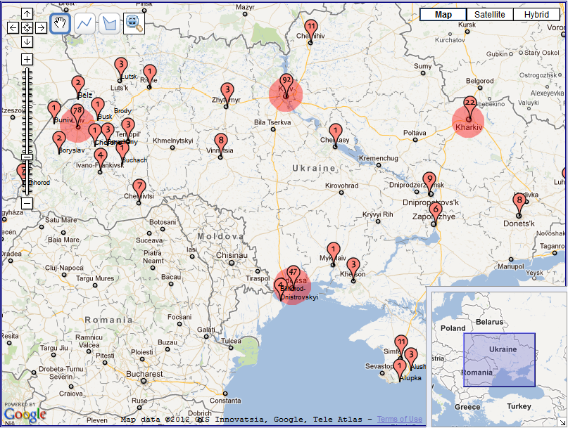
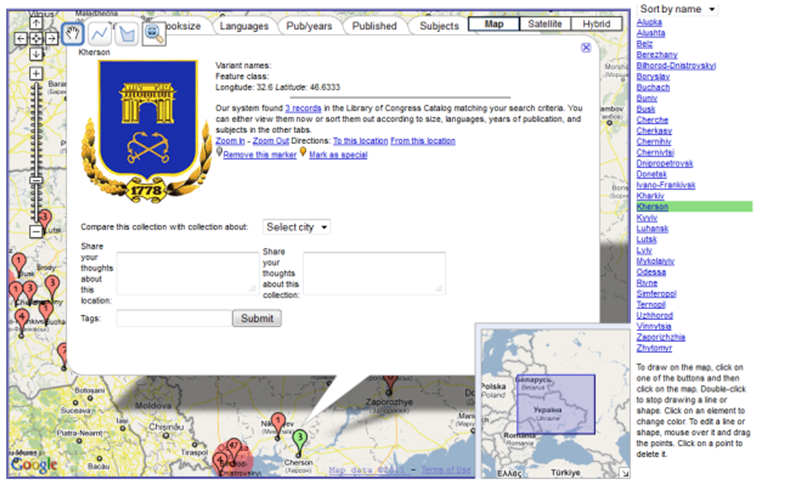

Making sense of document collections with map-based visualisations: the role of interaction with representations
Olha Buchel and Kamran Sedig
Faculty of Information and Media Studies, University of Western Ontario, London, Ontario, Canada N6A 5B7
Introduction
Map-based visualisations provide a new form of interface to geodigital libraries. These map-based visual interfaces display geospatial locations referenced in document collections on digital maps and facilitate user engagement with the underlying information. Currently, most such interfaces provide mainly two forms of interactions for accessing the underlying information: searching and browsing (Hill, 2006; Liu, Gao, Lin, Guo and Li, 2013; Clough, Tang, Hall and Warner, 2011). This paper aims to highlight the need for the inclusion of more interaction forms in order to better support the sense-making activities of end users. Sense-making may be thought of as the 'motivated, continuous effort to understand connections [among information items] in order to anticipate their trajectories and act effectively‘ (Klein, Moon and Hoffman, 2006, p. 71), as for example, among people, places or events. This paper asserts that searching and browsing interactions cannot effectively support the sense-making activities of end users. Inevitably, sense-making involves a broad set of smaller tasks and subtasks. For example, when we move to a new neighbourhood, we try to make sense of its streets, quality of schools, stores and so on. This paper concentrates on sense-making in geodigital libraries; that is, collection understanding or making sense of a collection of documents. Understanding a georeferenced collection involves two main activities: a) learning about the structure of semantic, geographic, social, personal working spaces, and interrelationships among them; and b) developing a cognitive map.
Generally speaking, a space may be conceptualised as a network of objects, their properties and their relationships mirroring the structure that is being represented from the real world (Dodge and Kitchin, 2001). There are different types of spaces. A semantic space is related to a collection's structure, properties of its documents and their changes or transitions. If the semantic space is overlaid onto a geographic space, the real-world concepts of distance, direction, magnitude and so on take on semantic associations (Deerwester, Dumais, Landauer, Furnas and Harshman, 1990). While semantic and geographic spaces gain new characteristics from merging with each other, they also preserve their own structures and properties. Buchel and Sedig (2011) have described the structure of semantic and geographic spaces related to document collections in great detail. Besides semantic and geographic spaces, today's document collections can also be considered as social spaces, where users can contribute to and interact with information and with each other (Spiteri, Tarulli and Graybeal, 2010). Social spaces are constructed by a community of users, where they can learn about activities of other users involving collections (e.g., what other users visited, what they used, what they annotated, and so on). Finally, there are personal working places where users creatively appropriate aspects of an information space, organize it, adjust it to their needs, and add their own understanding (Harrison and Dourish, 1996; Shipman, Marshall and LeMere, 1999).
Understanding visual information in space is facilitated by seeing as well as continuous interaction with information content and structure. Interaction plays an important role in sense-making activities involving space. It allows users to restructure and modify a space's content according to their perceptual and cognitive needs. For example, interaction with the semantic space may help users understand transitional processes in properties of collections. Interaction with the geographic space may support understanding of differences among various types of locations and their associations with collections. Interaction is also important when documents or collections of interest are retrieved, because users need to organize the retrieved information. Organizing tasks are inherently spatial, involving placing objects somewhere (Kirsh, 1995) and defining the geography of working spaces (Shipman, et al., 1999)—where geography here refers to spatial arrangements of objects conveying some meaning. In such arrangements, closer items can indicate urgency, and new items on top of a pile of documents can indicate recency, as documents in piles are usually ordered chronologically (Kirsh, 2001). Such spatial cues help users overcome the inherent inexpressiveness of space that prompts them to perform the next steps in tasks and activities.
Interaction also helps users form cognitive maps of an information space (Kitchin and Freundschuh, 2000; Sedig, Rowhani and Liang, 2005; Gollidge, 2010). In terms of their structure, cognitive maps include several main structural components: landmarks, paths, districts, nodes, edges (Lynch, 1960) and skeletons (Kuipers, Tecuci and Stankiewicz, 2003). They play a major part in framing a person's knowledge of the space and help people make navigation decisions (Look and Shrobe, 2007). However, regardless of the seemingly rigid organization of cognitive maps, they are characterised by various distortions and deformations (Tversky, 1981). For example, people make mistakes in remembering actual distances, alignments and directions in space. For this reason, it is desirable that map-based visualisations scaffold users' formation of cognitive maps by allowing them to create their own representations and modify their existing representations.
The purpose of this paper is twofold: to examine the role of interaction in enhancing understanding of various spaces associated with collections; and to design interactions that support the formation of users' cognitive maps. Our examination of interaction is in the context of the human-computer interaction community's conceptualisation of sense-making. It is important to note that sense-making in human-computer interaction is distinct from sense-making in library and information science (Dervin, 1992) and organizational theory (Weick, 1995), the latter two being outside the scope of this paper. We will present and define a number of concepts dealing with the design of interaction for map-based visualisations using an example prototype system, VICOLEX (VIsual COLlection EXplorer). VICOLEX is a prototype visualisation that we have designed and implemented to help users make sense of a collection of records from the Library of Congress catalogue. We use VICOLEX as a testbed to analytically study the role of interaction while drawing on empirical evidence found in the literature. We omit discussion of searching and browsing by space, time, and topics/subjects as these topics have been extensively covered in previous research (see for example, Hill, 2006; Pequet and Kraak, 2002; Edsall, 2001; Zerneke, Buckland and Carl, 2006; Li and Kraak, 2008).
The remainder of the paper is divided into five parts. In the next section, we review literature about current approaches to facilitating collection understanding and how visualisations can be improved. The subsequent section describes the prototype collection that we have used, while seeking principles for how collection understanding can be facilitated. We then turn our attention to an analysis of VICOLEX and its features, focusing on interactions and their role in making sense of collections and locations. Then, we briefly present how interactions can be combined to perform higher-level activities with VICOLEX. Finally, in the last section, we provide a summary of this research, briefly discuss its applications and outline some future lines of research.
Literature review
Existing approaches
Librarians, information visualisation and geovisualisation researchers have developed two major approaches to facilitate collection understanding: collection-level metadata and visualisation. The first approach represents collections at the aggregate level and provides context for the documents (Zavalina, 2010), in particular, summary of subjects, objects, geographic coverage, temporal coverage and provenance of collections. The second approach uses visualisations that provide collection overviews, examples of which include hierarchies, trees, paradigms, faceted classifications (Kwasnik, 1999), concept maps (Shen, Richardson and Fox, 2003), spatialisations (e.g., graphs) (Börner, 2010; Fabrikant and Buttenfield, 2001), and collages (Cunningham and Bennett, 2008; Bainbridge, Cunningham and Downie, 2004).
The first approach has two major shortcomings. First, it is in the form of text, which does not provide good support for the perception of the collection structure (Buchel and Sedig, 2011). Second, it is non-interactive. Metadata representations cannot be grouped, merged, decomposed, or transformed in any other way, and once a collection is catalogued, it is treated as a monolith that is not to be subject to any changes. Additionally, static metadata representations do not allow users to gain awareness of transitional processes in spaces. Perceiving transitional processes is critical since collections constantly change due to the addition and deletion of documents to and from them (Currall, Moss and Stuart, 2005). Transitional processes are caused by acquiring, weeding out and borrowing. Some of these transitional processes are temporary (borrowing), others are permanent (acquiring and weeding out). As a result of transitions, some collections grow, some shrink and some remain unchanged. Transitional processes have a direct effect on properties of collections. All additions to or subtractions from collections and sub-collections are reflected in their properties. Transitional processes are not always easy to understand without interactions (Sedig, 2005). In other words, without interactions, transitional processes often remain hidden (Dodge and Kitchin, 2001).
There is substantial evidence for the existence of transitional processes in ontological properties of collections (Heumann and Bernays, 1959; Kirchik, Gingras and Larivière, 2012; Taylor, 2000; see also, the Library of Congress classification). These include evolution of book sizes during different times, changes and shifts in languages of communication in collections (e.g., German to English as the principal language for chemistry publications), transitions in subjects especially those that occurred due to mutations of word meanings, substantial changes in controlled vocabularies (e.g., while older controlled vocabularies of genres in library catalogues were limited to encyclopaedias, biographies, histories, and a few other genres, recently they have expanded to include recently emerged ones such as aerial photographs, French dictionaries, conversation and phrase books, and science fiction).
As in the first approach, the second approach also has its own shortcomings. Map-based visualisations often lack task-relevant interactive possibilities (i.e., small actions and their subsequent reactions), such as filtering, selecting, gathering and others. To support understanding of collections (i.e., their sub-collections, properties, and relationships), users benefit from acting upon visualisations in a variety of ways, such as being able to select a portion of a map, group all documents linked to the map, discard all unwanted documents, and represent the remaining documents with other visualisation techniques (e.g., a Kohonen map, or a pie chart). Existing visualisation approaches also focus mainly on the representation (i.e., visualisation) of a document's (semantic) space, without any support for social and working spaces or support for the formation of cognitive maps.
Richer interactions can be found in the so-called space-time-topic-centered visualisations, which help users understand transitions associated with space, time and topics in collections. An example of this type of visualisation is the Health GeoJunction Web portal, which has a digital map synchronised with a tag cloud and a timeline. All individual views of this interface (the map, the tag cloud, and the timeline) are generated from the entire collection of documents and are, therefore, semantically equivalent. The merit of this type of interface is that it shows interrelationships among three ontological properties of documents: geographic space, time and topics (Andrienko and Andrienko, 2007), and a change in any of these properties is reflected in the other properties. Using this type of visualisation, however, renders it difficult to say how a collection about one location differs from those about another. Furthermore, these visualisations do not accommodate social and working spaces. Users frequently need help to understand the interface, locate the main widgets, interact with the interface, and interpret and evaluate the resulting actions (Andrienko and Andrienko, 2007).
Solution
To improve upon existing map-based visualisations, we conceptualise collection understanding as a sense-making activity, a theory developed within the human-computer interaction community. Sense-making activities take place in ill-structured, open-ended situations, such as exploring family genealogy, tracing the history of remote places and gathering information about locations of interest. These activities involve users establishing goals, discovering an information space's structure and texture (e.g., vocabulary), figuring out appropriate questions and determining how relevant answers might be organized (Russel, Stefik, Pirolli and Card, 1993). The outcome of sense-making activities depends on how well users perform these tasks. Given that collection understanding involves the above tasks; that is, discovering a collection's structure, asking questions about the elements in the collection, organizing and structuring retrieved information, and resolving potentially-conflicting pieces of information across many documents—it can be conceptualised as a sense-making activity.
In sense-making activities, attention is primarily paid to information objects and interactions with these objects. In computer-based settings, these would translate to representations and interactions with these representations. Users generally rely on external representations (such as graphs, tables, diagrams, maps and other graphical representations) to organize information (Russel et al., 1993). External representations help users conceptualise a problem and form internal representations, make sense of a situation, formulate actions, and understand the structure of the collection and information spaces (Buchel, 2011; Buchel and Sedig, 2011). Furthermore, representations provide constraints for users, dictate which operations should be performed next (Furnas, 2008), and facilitate planning and reasoning about alternative courses of action (Pirolli and Card, 2005). Examples of interactions with these representations include filtering, navigating, annotating and selecting. These are low-level actions that users perform on external representations followed by the response that they get (Sedig and Parsons, 2013). Interactions are particularly important for understanding complex, dense information spaces and their representations. For example, when working with complex map-based visualisations of library collections, people often want to rearrange or reformulate semantic and geographic spaces, gather documents and place them into piles or files, use various office supplies to keep related documents together, prepare documents for work, or synthesise topics. Interactions allow users to perform these physical-like actions in order to adjust representations and spaces so that they suit their epistemic needs. Interaction allows different properties, elements, relations, and layers of information to be made explicit and available on demand. Actions have potential benefits for cognition: they help users externalise thought, reduce cognitive load, simplify perception and mental computation (Kirsh and Maglio, 1994; Kirsh, 1996), gather rich sensory information from the environment (Klemmer, Hartmann and Takayama, 2006), and bring out otherwise unavailable perceptual information (Kirlik 1998). Empirical research suggests that interactions affect the quality and speed of sense-making in visualisation-based interfaces: systems with richer interactive possibilities support sense-making processes positively, while systems that lack interactions can have negative effects and slow down sense-making processes (Wright, Schroh, Proulx, Skaburskis and Cort, 2006; Russel, Jeffries and Irani, 2008; Liang and Sedig, 2010). For example, Liang and Sedig (2010) conducted a study in which a group of subjects had to make sense of and reason about three-dimensional visualisations. They used two versions of a visualisation tool, one with limited interaction and the other with multiple interactions. Subjects who used the tool with multiple interactions performed significantly better in their sense-making activity.
Although the beneficial role of interaction in sense-making is well-recognised, guidance for design of interaction is scarce. In the context of physical environments, Kirsh (2009) draws a distinction between two types of interaction with external representations during sense-making. The first type concerns usage of representations, such as rearranging or reformulating the representations, while the second type concerns preparation of representations for later usage, such as gathering documents and placing them into files, using various office supplies to keep related documents together, and outlining or synthesising topics in documents for presentation. While many interactions and tasks such as these exist (e.g., Roth, 2012; Gluck, 1996; Crampton, 2002), in general they are scattered across the literature, and comprehensive overviews of all possible interactions are rare.
Recently, Sedig and Parsons (2013) have developed an interaction design framework, EDIFICE (Epistemology and Design of human-InFormation Interaction in complex Cognitive activitiEs). Among other things, this framework characterises an extensive set of action patterns, which can be systematically incorporated into visualisation tools to assist users with performing cognitive activities. It is noteworthy that since an interaction is comprised of two components, action and reaction, when talking from the perspective of the user, the term action is sufficient to refer to an interaction. As such, these two terms are sometimes used interchangeably. A list of these actions is presented in Table 1. EDIFICE divides actions into two main categories: unipolar and bipolar. The unipolar actions are performed in one direction and do not have natural opposite actions, where a reversal of action can be performed to undo action. Bipolar actions, on the other hand, have two opposite actions, which can reverse each other. Table 1 lists EDIFICE's actions and provides a brief characterisation of each action. In this table, VR signified visual representation.
| Actions | Characterisation | |
|---|---|---|
|
Unipolar actions |
Annotating | augment visual representations with personal meta-information and coding schemes |
| Arranging | change order of visual representations | |
| Assigning | bind property to visual representations (e.g., feature, meaning, function, value, or behaviour) | |
| Cloning | create multiple identical copies of visual representations | |
| Comparing | determine degree of similarity or difference between visual representations | |
| Drilling | bring out, make available and display interior, deep information in visual representations | |
| Filtering | show and/or hide a subset of visual representations' elements according to certain criteria | |
| Measuring | quantify properties of visual representations (e.g., area, length, mass, temperature and speed) | |
| Navigating | move on, through, and/or around visual representations | |
| Scoping | dynamically work forwards and backwards to view compositional development and growth of visual representations, either temporally or spatially | |
| Searching | seek out the existence of or locate position of specific entities, relationships, or structures in visual representations | |
| Selecting | focus on or choose visual representations, either as an individual or as a group | |
| Transforming | change the geometric form of visual representations | |
| Translating | convert visual representations into alternative informationally- or conceptually-equivalent forms that require different degrees and kinds of cognitive processing | |
|
Bi-polar actions |
Accelerating/decelerating | increase speed of movement of constituent components of visual representations, or oppositely, decrease their speed |
| Animating/freezing | generate movement in constituent components of visual representations, or oppositely, stop their motion | |
| Collapsing/expanding | fold in or compact visual representations, or oppositely, fold them out or make them diffuse | |
| Composing/decomposing | bind visual representations together and create a singular entity, or oppositely, break whole entities up into separate, constituent components | |
| Gathering/discarding | gather visual representations into a collection, or oppositely, throw them away completely | |
| Inserting/removing | interject new information into visual representations, or oppositely, get rid of their unwanted or unnecessary portions | |
| Linking/unlinking | establish a relationship or association between visual representations, or oppositely, dissociate them and disconnect their relationships | |
| Storing/retrieving | put visual representations aside for later use, or oppositely, bring stored visual representations back into usage |
Notably, EDIFICE omits zooming, panning, and scrolling, the three staple interaction techniques for digital maps typically referred to in the literature. The reason for this is that the EDIFICE framework makes a distinction between interactions as techniques and as more abstract patterns. Interaction patterns are conceptual, pattern-based characterisations of how users act upon visual representations to facilitate cognitive activities. Interaction techniques, on the other hand, are characterised at a lower level of abstraction and are often technology-dependent implementations of an interaction pattern. For example, zooming is a technique derived from the translating pattern if it involves changing a representation from one form to another (i.e., semantic zooming), from the drilling pattern if it involves extracting and encoding new information, and from the transforming pattern if it involves geometric enlargement. We chose a framework that focuses on action patterns rather than techniques mainly for two reasons: 1) the number of interaction techniques is already overwhelmingly large and thus it is very difficult to know what to incorporate in a visualisation interface; and 2) researchers and designers do not employ a coherent language when characterising interactions, hence making it very difficult to know how to implement such characterisations. For this reason, the catalogue of interaction presented in EDIFICE provides us with a more robust vocabulary for understanding each interaction and its utility in the cognitive activity of collection understanding.
Based on the above discussion, to facilitate collection understanding, our solution involves the enhancement of map-based visualisations with various representations of spaces and interactions. Representations can help users conceptualise a problem, understand the structure of the spaces, provide guidance in navigation, planning and reasoning, while interactions can expedite sense-making and help users adjust visualisations to their epistemic needs. The next section discusses how the interactions in EDIFICE have been implemented in a map-based visualisation prototype, VICOLEX, to facilitate the understanding of a particular collection.
Method
VICOLEX
VICOLEX (VIsual document COLlection EXplorer), a prototype interface, is an interactive map-based visualisation for supporting the understanding of document collections with geospatial references. VICOLEX is built using Google Maps API Version 2.0, PHP5, Ajax, Fusion Charts, Geometry Controls and DragZoomControl. The ideas and principles outlined in this paper could be implemented using any other geographic information system; however, we chose Google Maps API Version 2.0 because this API already supports a host of interaction techniques and has an extensive function library, which can be used to design different interactions.
The rest of this section is as follows. First, we provide a description and analysis of the prototype document collection that is used by VICOLEX. Next, we discuss how we use EDIFICE as the foundation for the systematic design of interaction for VICOLEX so as to facilitate collection understanding. Afterwards, we analyse the different interactions in VICOLEX and discuss their utilities.
Description and analysis of VICOLEX's document collection
Our prototype collection is comprised of 349 surrogate MARC records about the local history and description of Ukraine from the Library of Congress Catalog (described in detail in Buchel and Sedig, 2011). The collection's records belong to DK508 class in the Library of Congress Catalog. From each record we have selected only the key ontological properties; that is, physical descriptions (illustrations, maps, height of the book, number of pages in the book, year of publication, place of publication), languages, types of publication (serial or monograph), bibliographic notes, subjects, titles, call numbers and acquisition numbers. Locations found in the Library of Congress Catalog were enhanced with gazetteer descriptions which include footprint information (latitude and longitude), names (main and variant), and population size. The purpose of these descriptions is twofold. First, they are required for mapping placenames on Google Maps. Second, they are intended to enhance understanding of georeferenced locations in the collection (e.g., having population size allows us to filter out collections by small, large and medium-sized locations). Although the collection seems simple to visualise, prior to visualising it, we analysed its structure, transitional processes, and other latent properties and relationships. We present some of this analysis next.
Structure
The selected collection belongs to schedule DK508, which is a lower class in schedule D (History) and is comprised of smaller sub-collections, each of which is about a specific geographic location in Ukraine. It is characterised by thematic cohesiveness and similarities in bibliographic descriptions. In addition, its documents are imbued with illustrative matters (e.g., illustrations, maps, portraits) that share among them such things as travel guides, encyclopaedias and tour guides. They hardly have any temporal properties and serve one group of users: genealogy and history researchers. The collection has 32 sub-collections, each about a geographical location in Ukraine (e.g., Kiev, Lviv, Kharkiv, Odessa, and other cities and towns). Some of these are large (containing 100 or more records) and some are small (one to three records). Sub-collections inherit many properties of the collection and are closely interrelated and interdependent.
Transitional processes
The selected collection, similar to other library collections, can be subject to numerous multidirectional transitional processes and changes which are difficult to discover in library catalogues or maps that only show locations of collections. However, analyses and studies of other collections provide evidence that transitional processes can be traced in ontological properties of collections (e.g., changes in subjects, languages and document sizes).
Implemented interactions in VICOLEX
VICOLEX implements several of the interactions identified in EDIFICE, specifically navigating, filtering, selecting, annotating, drilling, arranging, and gathering. In this section we discuss how these interactions can be integrated into a map-based visualisation, examine their role in supporting understanding of various spaces and scaffolding the formation of cognitive maps. Although the analysis here focuses on how the implemented interactions enhance and support understanding of the selected prototype collection, the way VICOLEX utilises interactions for enhancing sense-making can be useful for many other collections from other subject domains as well as other geographic information spaces.
Navigating
Navigating involves moving on, over, or through a representation, with the destination seldom pre-determined. It rarely modifies the representation itself and is useful for structural exploration and understanding of spaces. The purpose of navigating is generally twofold: a) to enable users to learn how to get from point A to point B; and b) to support the formation of cognitive maps (Sedig, Rowhani and Liang, 2005). As people navigate a space, they assimilate information into their own cognitive maps, which extends processing beyond walking through space to interpreting meaning and drawing important cues about implicit spatial positions and semantics (Dillon, 2000). VICOLEX supports formation of cognitive maps by making various spaces of the selected collection salient. For example, it highlights places that users visit the most as heat spots (shown as red circles in Figure 1). These heat spots are generated by continuous automatic annotation updates of log data of what has been visited and how often.
Figure 2 shows two implementations of navigating that are linked: semantic space on the map and on the sidebar. On the sidebar, collections are ordered alphabetically so as to make navigation between placenames easier for users who do not know the location of placenames on the map. This order plays the role of routes in navigation; they show proximity of collections on a bookshelf. On the maps, collections have spatial locations which facilitate understanding of geographic relationships and distances. Despite virtues of both sidebar and map representations, it is not always easy to see their connection. To make this relation apparent, VICOLEX combines navigating and drilling: as users click on an item in the sidebar panel, it changes the color of its related marker on the map and opens an information window. Alternatively, clicking on the marker highlights the related entry in the side panel. By walking from one item to another, users can see the proximity of collections on the bookshelf, and at the same time they can observe the proximity of locations and distances between locations on the map. Alphabetical order supplements navigation on maps with a linear order, which maps lack. The linear order helps users navigate from one marker to the next one.
![ Figure 1: Heat spots. Red markers on this map represent locations of collections and their size. Red-coloured circles around some locations show collections visited by users. [Click to display large version]](p631fig1.png){kind=link}
![ Figure 2: How navigation in the sidebar is linked to navigation on the map in VICOLEX. [Click to display large version]](p631fig2.png){kind=link}
Drilling
Exploration of geographic locations in VICOLEX is further enhanced by drilling. Drilling refers to acting upon a representation in order to bring out, make available and display its interior information. It is a mechanism for extracting hidden and perceptually-inaccessible information. While on many digital maps drilling of geographic locations is commonly done by automatic speed-dependent zooming (Harrower and Sheesley, 2005), VICOLEX augments automatic zooming with the discrete zooming/drilling technique that can be found inside each marker. The purpose of this technique is to eliminate excessive drilling that comes with automatic zooming in Google Maps. There is evidence that excessive drilling can cause frustration, reduce satisfaction and affect task performance (User Interface Engineering, 2001). Discrete zooming allows users to rapidly leave the viewing area and enter the target scale with the best representation of the location. This allows users to make discrete jumps to their target representations (Jog and Shneiderman, 1995). Discrete zooming-in allows users to make rapid adjustments to the scale without the need to move through all the map layers and without losing track of the target location. Discrete zooming-out allows users to go immediately back to their initial map layer.
Overall, the combination of navigating and drilling in VICOLEX supports the acquisition of three types of knowledge: (1) landmark knowledge about geographic locations, collections, and social cues; (2) route knowledge about collections and geographic locations; and (3) survey knowledge about semantic, geographic and social spaces. As such, the externalised cues about various spaces are intended to support the development and formation of the users' internal cognitive maps of geographic locations, collections, relationships and orderings among them. This provides a context to support the navigation processes of browsing, modeling, and interpreting locations, collections and social cues (Spence, 1999; Liang and Sedig, 2009).
Linking
Despite being useful for forming cognitive maps of geographic spaces, navigating and drilling alone fail to support sense-making at a deeper level. Exploration of the structure of collections in VICOLEX is facilitated by linking. Linking refers to acting upon two or more representations to establish a relationship between them. Linking complements navigating; this is because navigating involves steering across links. People think and learn through associations. Linking allows for the formation of associations and therefore helps users gain a deeper understanding of the relationships in information. It is sometimes assumed that explicit links between documents is beneficial. However, this is not always the case, as long unstructured lists of links can cause cognitive overload and disorientation (Dalal, Quible and Wyatt, 2000). To reduce the number of visited nodes and users' learning time, one of the techniques that some researchers (e.g., Yesilada, Bechhofer and Horan, 2007) recommend is the use of link embellishments (e.g., descriptions, thumbnails, summaries, toolboxes or linkboxes). VICOLEX uses embellished links to documents by providing additional graphical representations of ontological properties of collections (e.g., document sizes, languages, years of publication, subjects and places of publication), see Figure 3. The advantage of this is that it reveals layers of hidden information about contexts of collections and geographic locations. This approach can aid users' orientation within and understanding of the collection structure, as well as reduce the time required to learn about documents in the collection. These additional representations can steer users' sense-making activities by suggesting what new questions, properties and relationships to explore.
[Click for large version]
Filtering
VICOLEX uses filtering to enhance collection understanding. Filtering refers to acting upon a digital map or its constituent representations to show and/or hide a subset of their items according to certain criteria. Figure 4 shows VICOLEX's map enhanced with the filter-based legend. These filters consist of property selectors and range selectors. The property selectors allow users to query the ontological properties of collections. These consist of five groups of checkboxes, one for each group of properties—that is, genres/formats, most frequently used subjects, physical properties (i.e., illustrations, maps and other artifacts), languages, and types of geographic locations. The two range selectors enable users to specify the ranges of time related to acquisition and publication. Users can specify a range of values by setting a lower and upper limit or a specific value by setting both ends to the same value. The property and time selectors are linked to the map and the sidebar panel, where collections and documents that satisfy the current query are displayed (see Figure 4). These filters allow for narrowing of attention to relevant information so that users can study selected documents to understand them better (Shneiderman, 2008). They also allow users to reduce the amount of visual clutter on the map, to have control over what objects they want to view, and to adjust the degree of detail and abstraction of documents. Inhibition of irrelevant information is critical for improving memory of relevant information and hence sense-making (Cowan and Morey, 2006). Clutter reduction enables users to focus on distribution, density and spatio-temporal patterns of information. This in turn minimises mistakes in property-oriented visual tasks (Luck and Hillyard, 1994). Filtering in VICOLEX, similar to filtering in some other visualisation tools (e.g., dos Santos, 2004), reduces the complexity of high-dimensional data, gives users flexibility in selecting properties, and generally tends to be more effective because it generates a number of simple, easy-to-understand displays, each focused clearly on a particular aspect of the underlying information. For example, by setting the language to Russian (as shown in Figure 4) users can observe the distribution and numbers of Russian language books in this collection.
Russian language in VICOLEX
[Click for large version]
In addition to supporting understanding of collection properties on the map, filtering in VICOLEX also affects the representations of ontological properties of individual collections linked to markers. Because of this, these representations become flexible and prunable, and hence more suitable to sense-making. An example of filtering representations of ontological properties is shown in Table 2. Column A includes representations of properties of the entire Lviv collection, and Column B represents properties of the subset of this collection which contains only items about Description and Travel and items with maps. Initially, the collection consists of 78 items. After filtering, the sub-collection has 23 items. Comparison of the two columns reveals that representations in column B are more legible, less dense and easier to understand. Such filtering allows completing of tasks not at the level of objects but properties. It also allows combining and excluding properties that are too difficult to understand.
ontological properties in VICOLEX.
[Click for large version]
Arranging
Another interaction used in VICOLEX to enhance collection understanding is arranging. Arranging refers to acting upon two or more representations to change their order and position. This interaction involves moving representations. In the case of VICOLEX, arranging helps with making comparisons. Generally speaking, comparisons play an important role in visual reasoning tasks (Buchel and Sedig, 2011). In sense-making, users often engage in complicated comparisons involving more than one representation. VICOLEX supports such comparisons by arranging properties of collections side-by-side in a table, where representations of properties can be compared in adjacent rows. Such side-by-side comparisons are easier to accomplish than memory-based comparisons because users can concurrently view the same aspects of different objects. Juxtaposing views facilitates visual verification between ontological properties of collections that are hidden from view (Sahasrabudhe, West, Machiraju and Janus, 1999). Juxtaposed views impose smaller demand on visual memory and simplify perception and internal computation by eliminating the need for mental alignment (Kastens, Liben and Agrawal, 2008). Such views can bring out correlations or disparities and leverage perceptual capabilities to improve understanding of relations among views (Baldonado, Woodruff and Kuchinsky, 2000).
Annotating
So far, we have not accounted for how users adapt spaces and turn them into places in which they prepare collections for understanding; in other words, we have not discussed place-appropriating interactions. The ability to turn a space into a place is essential in sense-making and understanding. Annotating allows for this. According to Sedig and Parsons (2013), annotating allows users to add personalised information to a map-based visualisation and create user metadata. Annotations help people create knowledge about locations by adding emotions, cultural information, blog entries, links, tags and so on (Barricelli, Iacob and Zhu, 2009; Simon, Sadilek, Korb, Baldauf and Haslhofer, 2010; Krumm, 2007; Gazan, 2008). VICOLEX implements several annotation techniques: automated, structured and free-text. Automated annotation is used to support users' movement around the spaces and to enable them to retrace their paths if necessary. For this, VICOLEX marks users' footprints in the information space by changing the colour of visited markers. VICOLEX tightly couples visited markers on the map to placenames in the sidebar by automatically annotating the latter (see Figure 5 showing green markers on the map and green highlights in the sidebar). This technique records user actions in two representations simultaneously. Figure 5 also shows grey and gold markers and highlights, where grey signifies that a marker has been deleted, and gold means that markers have been flagged as special. These annotations are intended to function as place markers, triggers, or cues to support remembering and interpretations (Marshall, 1997; Kirsh, 2001). Annotative triggers or cues can guide attention: they designate triggers to ignore or to revisit in the future. Changing the colour of markers is an example of structured annotating. Structured annotating constrains what markers can be created, where they can be placed, or both. By constraining how annotations are created, disruption of the overarching activity is minimised. At the same time, the resulting annotations consistently provide users with semantic and mnemonic information about relevant, irrelevant and visited collections. VICOLEX also supports free-text annotations. Such annotations are becoming increasingly popular in maps (Branavan, Chen, Eisenstein and Barzilay, 2009). They have no fixed vocabulary, and no specific structure. Free-text annotations generate user-generated, semi-structured metadata, capturing user judgements, observations, opinions, problems and solutions.
[Click to display large version]
The annotations in Figure 5 are to be interpreted as follows: green markers and highlights in the sidebar mean that collections have been visited; gold markers and highlights mean that collections have been marked as special; grey markers and highlights with crossed-out text mean that collections have been marked as irrelevant (discarded or suppressed).
Automated, structured, and free-text annotations in VICOLEX allow users to construct new places suitable for the activity at hand; that is, although users are unable to create their own representations from scratch, they can modify the existing map by augmenting it. This allows cognitive offloading of the load associated with keeping track of previous actions by externalising them (Marshall, 1998). With annotations, users have indices to understand what is important in the document, collection, or location, resulting in enhanced interpretation and understanding of collections (Srihari and Zhang, 2000).
Selecting
Another appropriating interaction is selecting. Selecting refers to acting upon representations to focus on or choose them, either individually or as a group. When applied to a set of representations, selecting can group and cluster them together. Currently the predominant selecting technique on map-based visualisations is selection by clicking on a marker. Other techniques such as free-form selections (e.g., Lasso), bounding boxes, disjoint selection regions, circles of inclusion/exclusion, and multi-selections are not frequently present in visualisations (e.g., Hinckley, Guimbretiere, Agrawala, Apitz and Chen, 2006). Allowing users to select a group graphically obviates the need to formulate a query in order to combine spatially distributed objects. This is especially important for geographic locations, which are difficult to describe with words. Moreover, a group selection mechanism can streamline other interactions by removing the necessity to explicitly group and ungroup objects, potentially improving the cognitive and physical workflow of such interactions (Hinckley, et al., 2006). Some empirical studies also show that when users are provided with the capability for more flexible selection techniques (e.g., Lasso selection), they prefer them to click selections (Reilly, Welsman-Dinelle, Bate and Inkpen, 2005).
To select groups of collections from areas of interest, VICOLEX uses a bounding box technique, traditionally used in map libraries for searching and first envisioned by Pruett (1986). In VICOLEX, the bounding box is used for selection of collections, whether in their entirety or filtered, that are already represented on the map (see Figure 6). Elements that are filtered out, and hence invisible, cannot be selected with a bounding box, allowing users to define collections in their own way: collections and sub-collections can be combined and need not be fixed. Furthermore, once collections are selected, they can be acted upon with other interactions. For example, selected collections can be represented in a table while their properties are grouped together and shown on graphs and charts similar to the ones that are linked to markers (i.e., scatter plots, pie-charts, Kohonen maps, and so on). This feature is particularly useful when users need to mentally manipulate a group of elements as one entity (Sedig and Sumner, 2006). Groupings can be useful for answering the following questions: a) Is there a difference in languages in collections about small locations versus large locations? b) Is there a difference in subjects in collections about West and East? The bounding box technique is not the only technique that can be used to specify selections on maps. Google Maps Geometry Controls allow drawing various regular or irregular polygons which help with more precise selections.
[Click to display large version]
Gathering
Gathering on-line materials is one of the central tasks of users (Shipman, et al., 1999). Gathering refers to acting upon representations to place them into a container. On the one hand, gathering involves selecting and processing the collections or documents, while on the other, it can be viewed as an intermediate step that helps users organize their activity. As an organizing activity, gathering is associated with locating, retrieving, and integrating information from large numbers of distributed and heterogeneous documents (Knoblock, 1995). Integration in the context of collection understanding involves creating representational structures from collections. While integrating information, users rely on unstructured notes about identified evidence, important queries, and key questions that need to be addressed, as well as alterations of existing representations by adding new elements and relationships (Gotz, Zhou and Wen, 2006).
Gathering is inherently spatial, implying a working space (or place) where users can place documents to conjoin, negate, disjoin, or specify relationships among them. When users modify their strategies or the structure of their spaces, they maximise their rate of gaining valuable information (Pirolli and Card, 2005). VICOLEX utilises geographic space as a place for gathering information. Although the shape of the geographic space is not necessarily similar to the geography of the working space, there are many techniques that allow overcoming the idiosyncrasies of geographic and working spaces. Figure 7, for example, shows how all markers in the working space in VICOLEX are divided into three large episodes enclosed in polygons of different colours and similar collections are connected by lines. Furthermore, by annotating users can assign meaning to each of these episodes, and by linking similar collections by lines, they can assign meaning to relationships, where width and colour can encode types of relationships.
Although overlaying working space on the geographic space is common, as can be seen, for example, in the Toucan Navigator application (Schafer,Ganoe, Xiao, Coch and Carroll, 2005). The novelty of VICOLEX's approach is in merging geographic space with semantic, social and working spaces. This approach has many advantages. It preserves collections (geographic locations and relationships among them as they exist in library catalogues) while allowing users to add their own interpretations by annotating markers and episodes. It also helps users in exploring physical properties of episodes; for example, VICOLEX can calculate the size of the geographic area enclosed in an episode, or when users specify similarity relationships between collections, it can inform them of geographic distances between locations and their directions. Knowing distances helps users get a better sense of the geographic space.
Combining interactions to understand collections
Interactions in VICOLEX allowed us to make several interesting observations about the selected collection—specifically, the goal was to identify transitions, trends, and patterns related to the collection and locations that it represents. This section describes the procedures and outcomes of this task.
We started with exploratory browsing of sub-collections on the map, investigating collection properties and drilling into the larger scale map layers. The goal of this exploration was to make observations, notice trends and patterns, and to generate hypotheses. Linking and navigating interactions in the exploratory task revealed relationships between the trends and patterns in the collection, and political and economic events in Ukraine. For example, many locations have spikes in publishing after 1991, which are explained by the collapse of the Soviet Union and the switch to the market economy in Ukraine. Other linked representations allowed the generating of hypotheses about transitions in languages, subjects, and places of publication.
With regard to understanding locations, we noticed many Ukrainian cities, like others in Europe, are located on rivers or small streams. This observation was not apparent from the main map representation because, due to scale constraints, it shows only the Dnieper, the largest river in Ukraine. The relationships between rivers and locations became more apparent with a drilling interaction, which allowed us to reach the larger-scale Google Maps layers. To remember which locations were close to rivers, we used structured annotation, the map of which is shown in Figure 8. Locations with rivers were marked with gold balloons, and those without were shown in green, while one location is in grey. The location in grey is Lviv, which required a special colour because Google Maps shows that rivers in Lviv end before the suburbs. Because of the strange appearance, and upon investigation, we discovered that Lviv is built on two rivers which are hidden underground. This serendipitous discovery, which was not prominent in the visualisation before interacting with it, is an illustration of how drilling and annotating can enhance understanding of locations, and foster further exploration and investigation. In the future, the large-scale layers in VICOLEX, which are hidden beneath the main map, may be enhanced with social media layers such as Wikipedia articles, YouTube videos, and Panoramio images.
[Click for large version]
We also experimented with filtering the collection by individual and combined properties. Combined filtering was used to investigate temporal aspects of other ontological properties (genres, subjects, physical attributes, languages and population sizes of locations). More specifically, we looked at shape, quantitative and qualitative transitions in each of the above properties during the periods between 1917-1990 and 1991-2007, with 1991 being the landmark year when Ukraine became independent. In addition, using selecting and linking, the transitions were investigated both in individual locations and major socio-economic regions of Ukraine (East, West and Crimea). The outcomes of filtering can be classified with regard to quantitative transitions, shape transformations and geographic distribution changes. With regard to quantitative transitions, we found that the majority of the entire collection was published after 1991 (109 books were published in the period between 1917 and 1990; and 225 books were published after 1991). This is evident from the two map representations filtered by their years of publication: before 1990 and after 1991 (Figure 9). The comparison of the representations in Figure 9 reveals that there are more markers in Figure 9b than in Figure 9a, and the numbers of documents linked to the large cities are much higher in Figure 9b than in Figure 9a. Another quantitative transition was about books containing maps. In particular, the investigator found that only seven out of fifty-seven map-containing books were published before 1991 (Figures 10a and 10b). Moreover, this quantitative transition is coupled with the transformation of the geographic distribution of these books. While the seven books with maps published during the Soviet-era Ukraine were only about large cities (Lviv, Kyyiv and Odessa), the remaining fifty books published after 1991 were about both large and small locations.
|
|
|
|
with maps before 1990 |
with maps after 1991 |
Quantitative transformations were also found in languages. Filtering by time and language revealed that books in Polish about Ukraine were almost non-existent before 1981, while Polish publications after 1981 increased significantly, especially about Lviv (forty items). This can probably be explained by the fact that Lviv was part of Poland until 1939.
With regard to shape transformations, an interesting observation was made about a difference in book formats after the collection was filtered by location population sizes and re-represented on a scatter plot by means of the selecting interaction. The resulting representations are demonstrated in Figure 11, where a scatter plot shows book sizes in the sub-collections about locations with population sizes less than 200,000 (a), and in the sub-collections about locations with population sizes greater than 200,000 (b). These two figures suggest a positive correlation between book sizes and location sizes, possibly because documents about smaller locations are expected to have fewer pages and be smaller in height than those about larger locations.
|
about locations with population less than 200,000 |
about locations with population larger than 200,000 |
While geographic distributions can be observed in conjunction with quantitative changes, they can also be observed in isolation. For example, we observed that, with a few exceptions, Russian-language books seem to be distributed more in the ethnically Russian territory than in the ethnically Ukrainian territory (see Figure 12, where ethnically Russian territory is highlighted). To validate this hypothesis, we used the GeometryControls to draw a layer on top of the map visualising library collections. This allowed for the better observation of the spatiality of Russian collections with regard to the Russian-speaking regions in Ukraine. Although three locations lie outside the boundary of the Russian speaking regions, only one (Kiev) can also be considered a part of Russian-speaking community. In general, the layer helped with the process of generalisation about the distribution of Russian collections.
|
The ethnically-Russian area is highlighted in red. |
This section has briefly outlined how interactions and representations in VICOLEX facilitated collection understanding through making observations about the trends, patterns and transitions in the prototype collection and their locations. These observations demonstrate that interactions can enhance understanding of collections, their properties, their distributions and locations. Furthermore, besides the reported observations, the interactive and representational features of VICOLEX can allow other users to observe other trends and facts that will help them generate new hypotheses and generalisations about not only the prototype collection but others that can be uploaded into it. In this respect, VICOLEX's support for sense-making is open-ended.
Conclusions and future work
This paper has analytically demonstrated how interactions can enhance understanding of collections and facilitate the formation of cognitive maps. At first glance, any one of the interactions in isolation may seem insignificant, yet, when analysed and combined together, they can greatly reduce the overall efforts of users and expedite the time necessary for completion of sense-making activities. While multi-scale maps like Google Maps can help users gain deeper understanding of landforms, landscapes, areas, distances and navigational routes in locations, added interactions such as annotating, selecting and gathering help them capture their observations, generalise them and make sense of them. Interactions facilitate these activities incrementally, one interaction at a time. Although with regard to VICOLEX we have yet to verify our argument empirically, based on evidence from other research (see, for example, Tudoreanu, 2003) and the current exploration, it seems plausible that augmenting map-based visualisations with interactions can translate into improved user-support in their sense-making activities.
Using VICOLEX, we have explained that navigating and drilling interactions can facilitate exploration of spaces; linking, filtering and arranging interactions can facilitate understanding of collections, their properties and transitional properties; and annotating, selecting and gathering interactions can help users appropriate spaces and adapt them to their own activities. Future work in this area can determine how to implement, for enhanced sense-making activities in map-based visualisations, the interactions of the EDIFICE framework (Sedig and Parsons, 2013) not dealt with in this paper.
In particular, VICOLEX does not currently provide adequate support for dealing with the multiple dynamically generated representations that display multidirectional transitional processes. The difficulty of dealing with continuously changing information is that users need to identify and relate both spatially and temporally separated components of a map-based visualisation (Lowe, 2008). Moreover, in VICOLEX users have to relate spatio-temporal components to hidden layers linked to markers on the map. This presents the risk of excessive perceptual and cognitive demands made by the dynamic information that users need to process. Non-stable, transient information may impose a higher cognitive load on the users (Hegarty, 2004). In addition, spatially-distributed representations may impede comparisons and other reasoning activities. Rensink, O'Regan and Clark, (1997) demonstrated that observers have great difficulty noticing even large changes between two representations when intermediary images are shown between scenes. Determining how to provide support for making sense of multidirectional transitional processes in map-based visualisations is another line of future investigation and research.
Significance. The ideas in this paper are significant, not only for understanding and making sense of document collections, but also for the design of tools and interfaces that help people explore any kind of structured information with geospatial properties. For example, aggregating medical records by regions and using interactive map-based visualisations can help public health managers to explore the health data. It helps with the making sense of people's habits, demographics, and spread of diseases—hence, assisting with the development of public health policy and strategies. This research can potentially be applied to visualisation tools and information interfaces that are intended to support activities such as making sense of health records, making decisions involving real estate listings, and exploring natural and social phenomena (e.g., electoral votes, spread of diseases, and social networks).
Acknowledgements
About the authors
Olha Buchel has a PhD in Library and Information Science from Western University. She specializes in visual analytics, sensemaking, information visualization, and organization of georeferenced collections. In the past she has worked as a Research Associate at the Alexandria Digital Library, the first geodigital library in the world. Currently she is employed at Counting Opinions, Inc. as a Data Analyst where she visualizes statistical datasets. She also teaches a Geospatial Data course at the Faculty of Information and Media Studies at Western University and various workshops at Library Juice Academy.
Kamran Sedig, Ph.D. is an Associate Professor with a joint position in Library and Information Science and Computer Science at Western University. He has been doing research in the area of human-centered interactive computing since 1993. His research and publications span a range of topics such as data and information visualization, visual analytics, human-information interaction design, information interface design, medical and health informatics, design of serious and mind games, and cognitive and learning technologies. Currently, his research team are working on health informatics tools, data analytics techniques, visual analytics, knowledge translation and mobilization, and development of frameworks for the design of the structure and interactivity of video games that promote reflective thinking.